Methods
The Kalman model and the SEIR model are used as our methods to estimate the spread of coronavirus pandemic and further conduct future predictions.
1. Kalman Filter
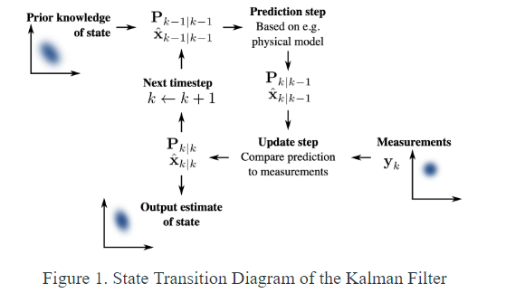The Kalman filter is a recursive mathematical process that uses a combination of equations and actual data input to estimate the true value, and in this case the number of confirmed cases and the number of deaths based on a time series analysis. The algorithm can be real-time, meaning that the estimate can be calculated based on only the present input measurements and the previously calculated state transition matrix.
The overall methodology of the Kalman filter can be separated into two steps, predict (a priori) and update (a posteriori). Before the specific equations of these two phases are introduced, let us define some matrices and vectors used in the process:
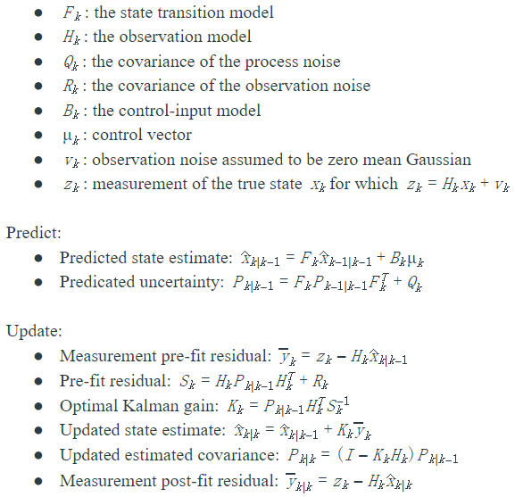
A 1-day prediction of the COVID-19 confirmed cases and deaths in several states can be calculated. And for multi-day prediction, the measurement of the current day is the prediction that was made based on the prior day.
2. SEIR Model
SEIR is a model to estimate the pandemic spreading trend based on population data. S, E, I, R respectively represents susceptible individuals, exposed individuals (infected but not yet infectious or symptomatic), infected individuals (severity increases with class i and we assume individuals must pass through all previous classes) and recovered individuals (now immune).
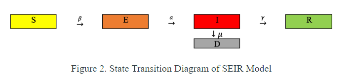 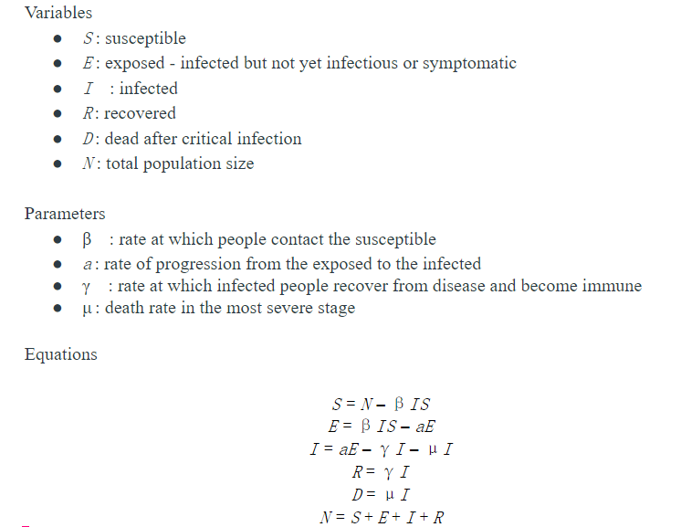Infections for States
In this part, we will show prediction of the number of infected people in the five states with the worst outbreaks and compare our prediction results with actual data. What's more, the spread of COVID-19 in the next two months will be predicted.
1. Prediction results for five states.
- 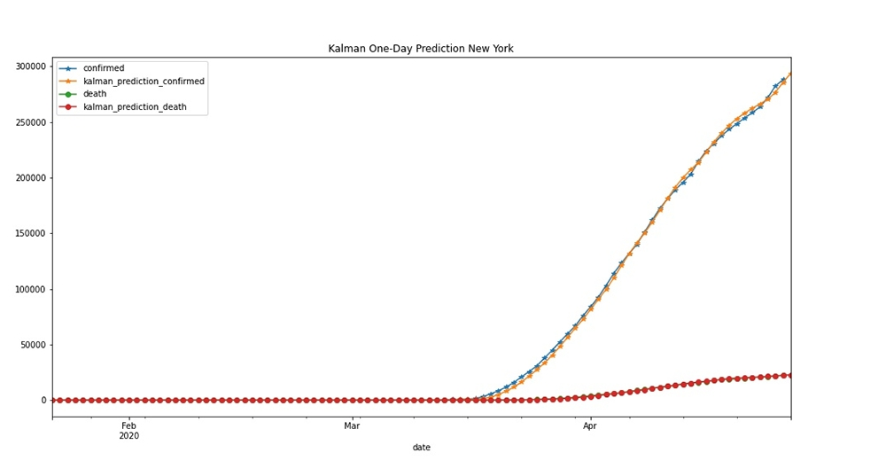
- 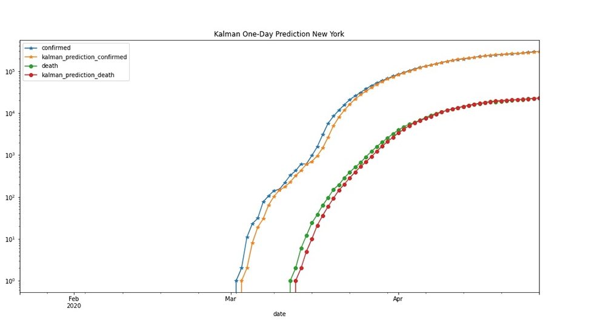
- 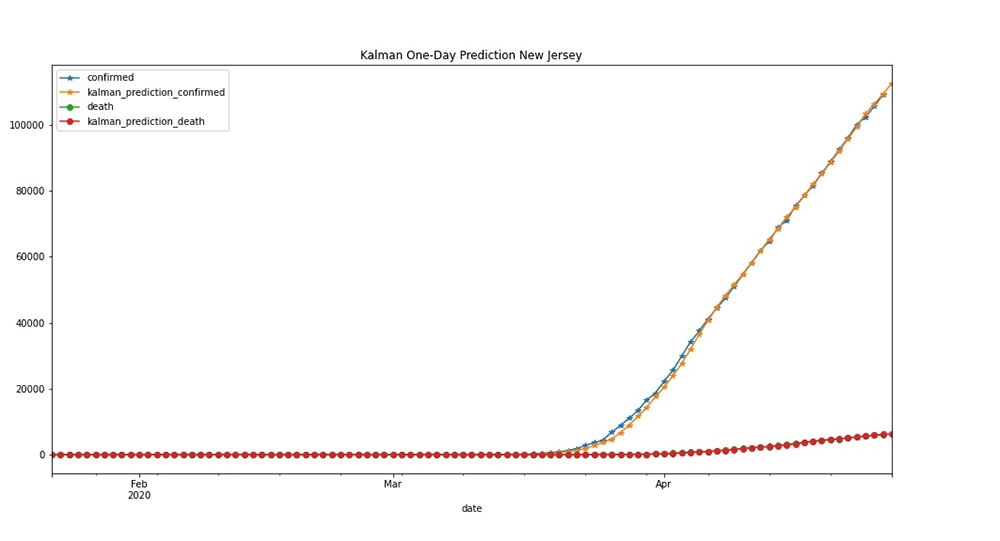
- 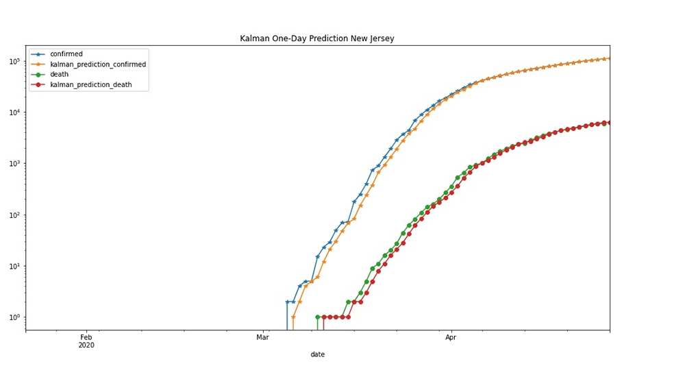
- 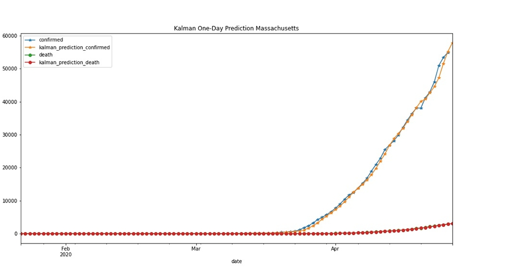
- 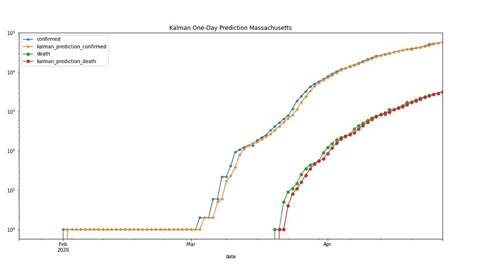
- 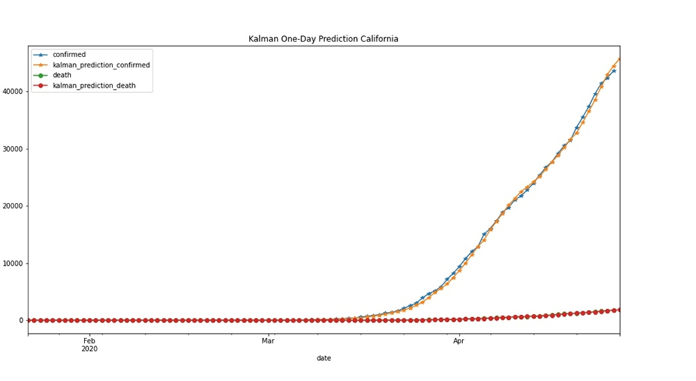
- 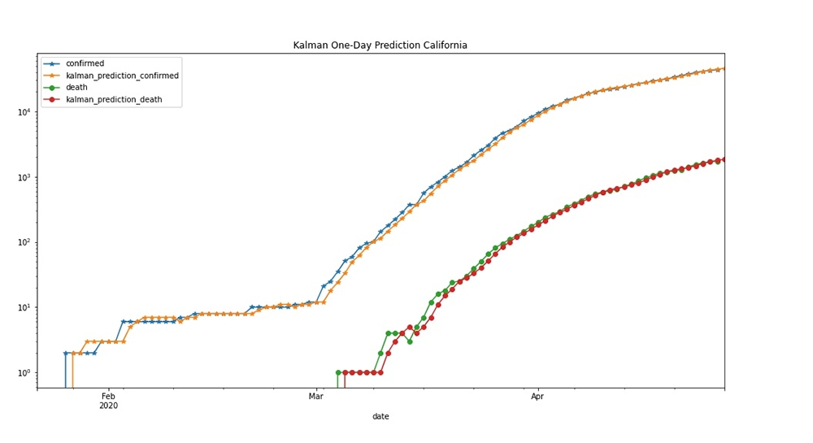

- 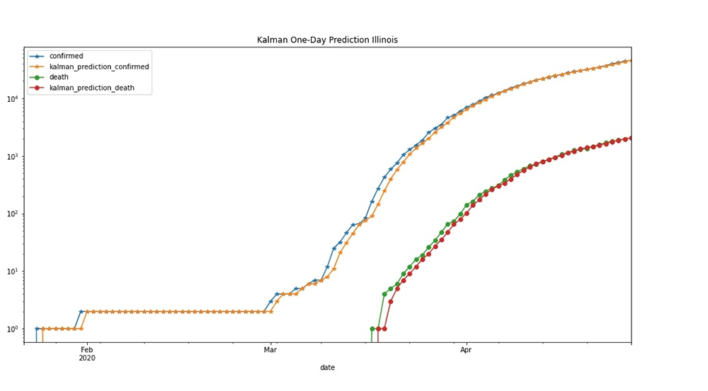
2. COVID-19 spread projection for the next 90 days.


People with Different Health Conditions
In this part, we will show our prediction for total confirmed cases and deaths. We will also comapre the five states in those two categories.
- 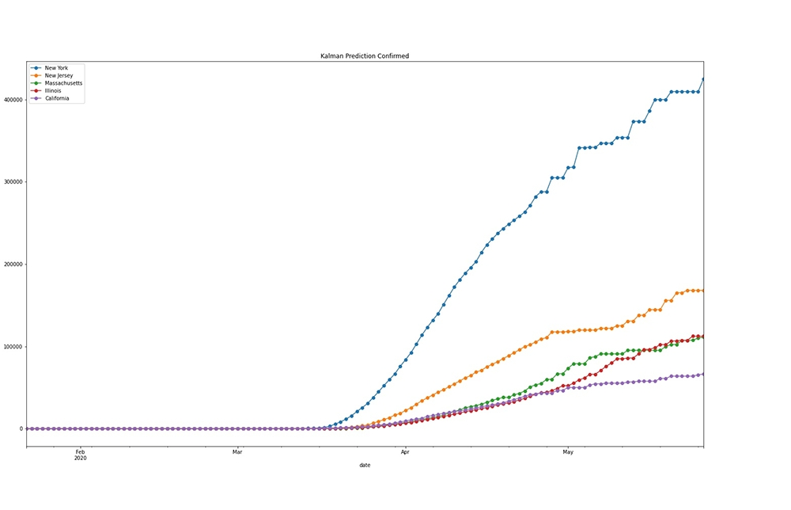
- 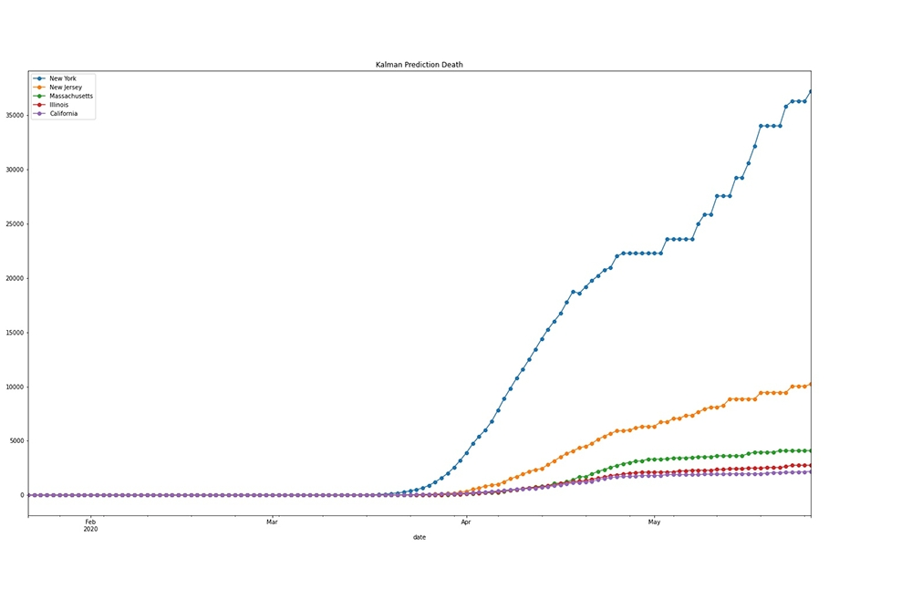